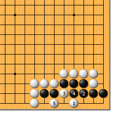
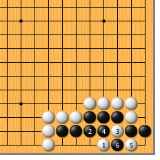
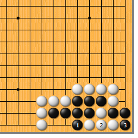
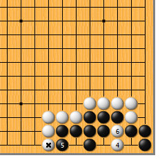
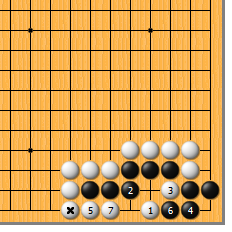
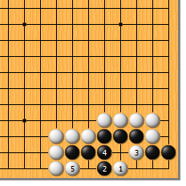
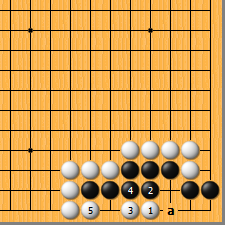

|  |  | |
| 图1 白1点是急所。黑2如粘，白3断，黑4打时，白5硬作劫，非常顽强。白3如于5位夹渡，黑3位粘，白失败。
| 图2 白1时，黑2如这边粘，白3断仍是要点。黑4打、白5扳、黑6提仍然成劫。黑6如不打劫而想净活，嘿嘿…… | |
|  |  | |
| 图3 黑1打，白2粘，黑3提四子，看上去黑要活了。到底是谁误算了？？？
| 图4 白4点，黑5做眼，白6断！白*子可不是放在那儿玩的，黑两边不入气，顿死。（有不少人误算了吧？）所以，黑只好如图2打劫。 | |
|  |  | |
图5 白3断时，黑4立确保一眼，白又当如何？此时，白5、7从背后动手，是狠毒的一着。只要救回白1一子，黑自然不行。白*子再次发挥了作用。（不然的话，白接不归）
| 图6 白1时，黑2如尖顶，白3当然断。黑4粘，白5曲，黑两边不入气。这应该已是第一感觉了。 | |
|  | 您的高见 | |
图7 白1时，黑2曲也是顽强的一手。白3爬好，黑4粘，白5曲，黑因气紧无法阻止白的联络。黑4如走a位，白5仍然曲，结果不变。 |